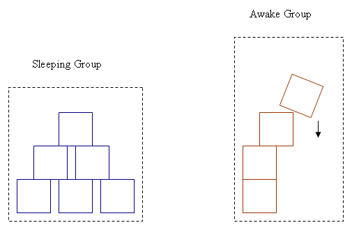

Sleeping
Overview
When a body does not move for a period of time, it is assumed that
it will remain immobile until an external force throws it out of
equilibrium. Until this force happens, it is no longer
simulated in order to save time. This state is called sleeping.

In previous versions of PhysX, a body that was not moving for a certain
time was considered sleeping and would not be integrated. When all
bodies in an island had fallen asleep, they were pulled out of the
simulation.
In 2.5 and later, bodies will only be considered as being asleep when
the whole island they’re in wants to fall asleep. This means that
bodies that have not moved for some time may still be awake, if they
are in the same island as something that is moving. However, when the
whole island falls asleep, it is taken out of the simulation
totally.
Note that bodies that are put to sleep have their velocities set to zero,
even if they were not exactly zero before.
The length of time over which the SDK judges an object to be
sleeping is defined by the constant NX_SLEEP_INTERVAL. Each body has a
sleep counter which is decremented each step based on if the body is
determined to be awake(eg a force applied). When the counter reaches
zero the body becomes a candidate to sleep.
The counter is specified by the body desc member:
NxBodyDesc::wakeUpCounter
Sleep Determination
There are a number of methods used to determine if a body can progress
to a sleeping state,
and hence a group, if all bodies within the group satisfy this
condition. The methods are described below. The reason for a number of
sleep determination methods is that it is not always easy to determine
if a body is genuinely in equilibrium. For example a long pendulum may
have a low angular velocity but still display a lot of movement at the
end furthest away from the pivot.
Simple Sleeping
Simple sleeping was the default in previous version of the SDK. It
simply judges an object to be asleep if its linear and angular velocity
are below a threshold for the interval specified by NX_SLEEP_INTERVAL.
This is controlled using:
NxBodyDesc::sleepLinearVelocity
NxBodyDesc::sleepAngularVelocity
and the methods:
NxActor::setSleepLinearVelocity(NxReal threshold)
NxActor::setSleepAngularVelocity(NxReal threshold)
Averaged Velocity
Keeping a running average of the velocity across time steps can lead to
smoother sleep determination, which allows oscillating bodies to fall
asleep more often. This mode is enabled using the body flag :
NX_BF_FILTER_SLEEP_VEL.
Energy Based Sleeping
Using mass-normalized kinetic energy thresholds instead of velocity
thresholds can also give better results. For two reasons: There is only
one parameter to tweak and it automatically compensates for non-uniform
inertia tensors. Long thin objects are very hard to tweak since the
same angular velocity threshold is used around all three axes without
compensating for the non-uniform tensor. The energy method also uses a
scheme for checking the first derivative of the energy. It compares the
current energy to the energy last frame, and the wake counter is reset
whenever the energy increases. This means that bodies must strictly
lose energy to be put to sleep. Close to sleep threshold, jitter tends
to increase energy a little, so there’s a small threshold for this
mechanism to kick in (currently 5% of energy threshold).
To enable energy based sleeping a body must have the
NX_BF_ENERGY_SLEEP_TEST raised (this is the default). The
sleepEnergyThreshold parameter controls the point at which the kinetic
energy is considered low enough to classify the body as sleeping.
NxBodyDesc::sleepEnergyThreshold
NxBodyDesc::flags (NX_BF_ENERGY_SLEEP_TEST)
Adaptive Damping
In addition to the above methods it is possible to specify a
sleepDamping parameter for bodies. This allows the objects to go to
sleep in a smooth manner, instead of coming to a complete stop. Sleep
damping is applied over the interval NX_SLEEP_INTERVAL, as a body
progresses towards a sleeping state the amount of damping is increased
from zero up to sleepDamping.
NOTE: Sleep damping may cause unwanted artifacts if used in conjunction with articulated
objects such as ragdolls. If you observe this phenomenon, consider applying
damping only to the most important bodies.
NxBodyDesc::sleepDamping
Numerical considerations
Since bodies are awakened whenever contacts are lost, actors may have a problem
falling asleep when they're in a position such that numerical imprecision in
the collision detection causes contacts to appear and disappear without any
movement. This is not commonly a result of normal simulation, but may occur
if, for example, two boxes are created with faces that exactly meet. To avoid
this effect, you can create the boxes with a slight overlap, up to the skin width,
which will make the contacts persistent.
Sleep Control
Because an object automatically wakes up when a non sleeping object
touches it or when a parameter is changed the mechanism
should be mostly transparent to the user. However there are cases when
it is desirable or required to exert direct control over object
sleeping.
For example:
- When the user changes the contact groups in a way which causes
the set of contacts to change (e.g., when calling
NxActor::setGroup(), etc.).
- When changing global parameters such as gravity.
- When creating spring and damper effectors.
- When altering the collision filtering constants (e.g.,
NxScene::setFilterBool()).
- When the user wishes to throttle the performance of a scene by
force actors to sleep.
You can query a body's sleep state
with the following methods:
bool NxActor::isGroupSleeping();
bool NxActor::isSleeping();
But from version 2.5 these methods will return the same value, since
bodies no longer fall asleep individually.
If you need to explicitly wake up a sleeping object, or force an
object to sleep, use the following methods:
void NxActor::wakeUp();
void NxActor::putToSleep();
Island retrieval
If you need data on the sleeping island a certain actor is part of, you can get it using the
getBoundForIslandSize() and getIslandArrayFromActor() methods of NxScene:
NxActor *actor = ...
NxU32 it = 0;
NxU32 nbIslandActors = gScene->getBoundForIslandSize(*actor);
NxActor** islandActors = (NxActor**)alloca(sizeof(NxActor*)*nbIslandActors);
nbIslandActors = gScene->getIslandArrayFromActor(*actor, islandActors, nbIslandActors, it);
You may also use the iterator parameter to extract the island one bit at a time, for example into a
fixed-size buffer.
API Reference
Copyright © 2008 NVIDIA Corporation, 2701 San Tomas Expressway, Santa Clara, CA 95050 U.S.A. All rights reserved. www.nvidia.com